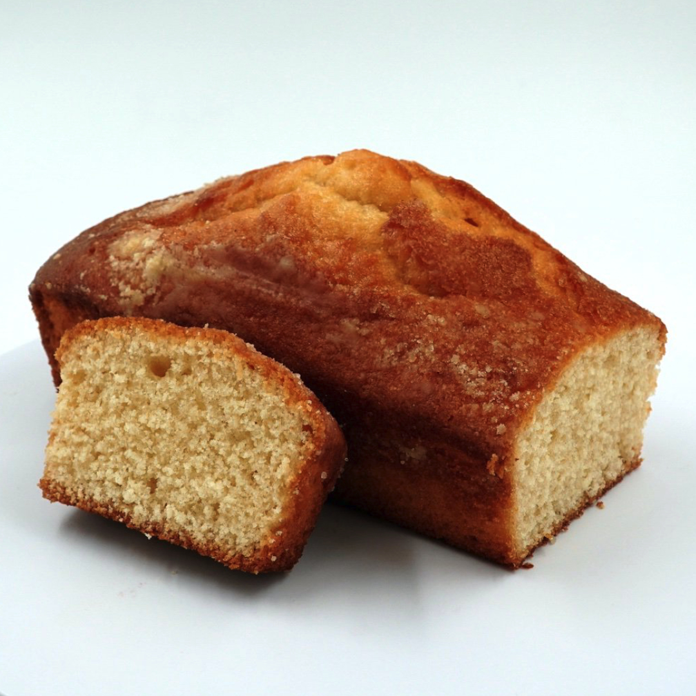

Queque
Home

Receta de queque de vainilla facil para 12 trozos
Ingredientes:
- 4 huevos
- 2 tazas de azúcar
- 1 taza de leche
- 3 tazas de harina
- 1 cucharada de pilvos de hornear
- 3 cucharads de margarina
- Esencia de vainilla
Preparación:
- En un bowl mezclar los huevos con el azúcar
- Encender el horno a temperatura media
- Incorporar de a poco la harina cernida y la leche (lograr una consistencia como de leche condensada helada) y seguir batiendo unos 2 minutos
- Al final incorporar el polvo de hornear y la esencia para aromatizar y saborizar que prefiera (1 cucharadita de ralladura de limón o 1 cucharadita de ralladura de naranja o 1 cucharada de esencia de vainilla o 1 cucharadita de canela en polvo o 1 cucharadita de esencia de anís, etc
- En un molde enmantequillado verter la mezcla y llevar al horno que ya se encuentra precalentado por unos 45 minutos(Si puede elegir, 25 minutos en llama ascendente y 20 minutos en llama envolvente)